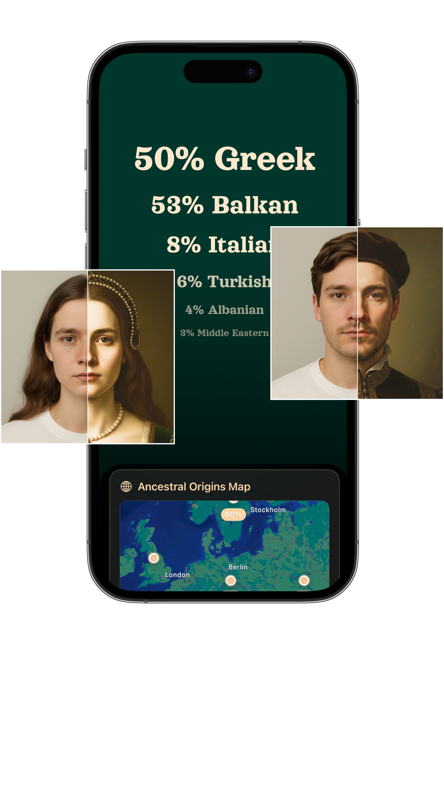
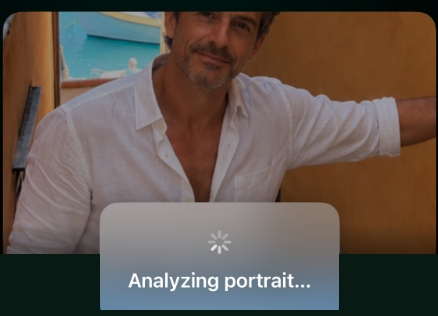

What can your face reveal about your roots?
Upload a photo and explore possible ancestry, regional origins and cultural connections in seconds — no DNA kit required.

One photo. A whole new way to explore your origins.
See possible regional connections, heritage patterns and ancestry-inspired insights generated from your photo.

Curious? It only takes a moment.
No saliva kits. No paperwork. No waiting weeks for lab results.
Upload a photo
Take a quick selfie or choose any clear photo from your phone's camera roll.
Let Ancestor Lens analyze it
Our visual AI models identify facial features and compare them against regional heritage archetypes.
Discover your results
Explore your regional breakdown, historical twin portraits, and global heritage matches instantly.
Explore your roots without sending DNA to a lab.
Laboratory Testing
- ✕ Requires saliva swab or blood sample
- ✕ Must wait 4–8 weeks for laboratory processing
- ✕ Genetic DNA data stored in corporate databases
- ✕ Recurring weekly or monthly subscription traps
- ✕ High cost ($99–$199+ per kit)
Instant AI Exploration
- ✓ Just a photo from your phone
- ✓ Instant results in 5 seconds
- ✓ Photos are analyzed instantly and deleted
- ✓ Zero subscriptions — simple one-time payments
- ✓ Download free on the App Store
Transparent Note: Ancestor Lens is an AI-powered visual ancestry exploration experience designed for personal curiosity and cultural storytelling, not a genetic DNA laboratory test.
Your photo is yours.
Ancestor Lens analyzes your photo to generate your result, but your photo is not stored.
PHOTOS ARE NOT STORED
Your photo is processed in memory to generate visual insights and discarded immediately.
NO DNA REQUIRED
We do not collect biological samples, genetic data, or medical information.
NO SUBSCRIPTIONS
No automatic recurring charges or unexpected monthly billing cycles.
PRIVACY-FIRST DESIGN
We never sell personal data or share your information with third-party advertisers.
Frequently Asked Questions
No — Ancestor Lens is an AI-powered visual ancestry exploration experience, not a genetic DNA laboratory test. It analyzes visual facial features to reveal possible regional connections for personal curiosity and identity exploration.
Ancestor Lens uses artificial intelligence visual models trained on global ethnic, historical, and regional facial patterns. When you upload a photo, the app measures key visual markers to suggest regional connections.
Ancestor Lens provides visual and cultural exploration, not medical or genetic lineage data. It offers an engaging, visual way to explore facial features and global heritage patterns.
No. Your photos are processed in temporary server memory solely to generate your analysis and are discarded immediately afterward. We never store, retain, or build facial databases from your photos.
No. Ancestor Lens has zero weekly, monthly, or annual subscriptions. Purchases for extra features are one-time only with no recurring billing.
No. Because there are no subscriptions, nothing ever renews automatically. You only pay when you explicitly choose to make a one-time purchase.
No! Ancestor Lens requires no saliva samples, swab kits, or lab waiting times. All you need is a photo on your iPhone.
The AI photo analysis takes approximately 3 to 5 seconds once your photo is selected.
Yes, Ancestor Lens is free to download on the Apple App Store.
Ancestor Lens is optimized for iPhone devices running iOS 15.0 or later.
Your roots might surprise you.
See what Ancestor Lens discovers in your photo.
Explore the Science & Psychology of Roots
Learn how facial visual analysis, DNA testing, and cultural heritage intersect.
Can AI Guess Your Ethnicity From a Photo?
Discover how modern computer vision explores facial visual patterns and regional heritage markers.
Read Article →AI Ethnicity Test vs Genetic DNA Testing
Understand the core differences between laboratory genetic testing and instant AI photo exploration.
Read Article →What Nationality Do I Look Like?
The science of facial feature perception and how visual traits connect to regional heritage.
Read Article →